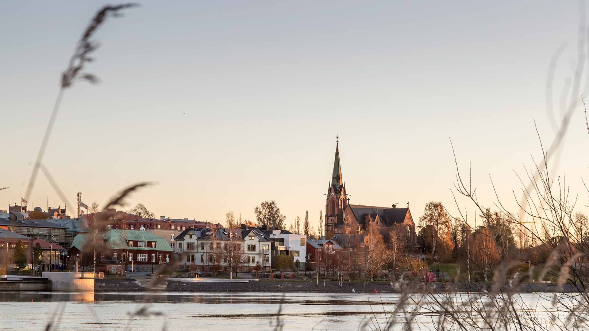

Founded 2026 · Umeå
Long-term investing, based on research.
Balk Investmentbolag is a partnership in Umeå whose co-owners invest their own capital together. The firm holds a concentrated portfolio of listed companies, selected through fundamental analysis and held for years.
Watch the film
The platform
Every analysis and decision in one place.
The firm's work runs on a platform developed in-house: the research on each company, every decision and its reasoning, the portfolio's daily value and risk, and the annual report to the co-owners.
Portfolio
Every holding valued daily in kronor, with the return measured against the market's indices.
Risk
How the holdings move together, and how the portfolio has behaved when markets fell.
Research
Financial statements, filings and ownership for listed companies, analysed with measures from academic research.
Markets
Indices, sectors, interest rates and inflation, with data from central banks and statistics agencies.
Decisions
Every decision recorded with its reasoning, then compared with what actually happened.
Reporting
Each co-owner's share kept in units, the year-end close checked line by line, and a full annual report.
Research
The research behind the approach.
The firm's investment decisions rest on research, where questions are answered with data rather than assumptions. Studies are published here as they are completed.
-
A Formula for Investing in the Semiconductor Industry
Which fundamentals predict semiconductor stock returns? Across fifty firms and seventeen years, return on assets is the one that holds up.
Read the summary -
A Formula for Investing in the Renewable Energy Sector
Which fundamentals predict renewable energy stock returns? Return on assets and revenue growth, tested on a six-stock portfolio from 2018 to 2023.
Read the summary
About
A partnership, not a fund.
Balk Investmentbolag is a simple partnership, an enkelt bolag under Swedish law. The co-owners invest their own capital together, and the firm takes no money from anyone else.
The analysis concerns the business rather than the share price, and every company faces the same question: would it be worth owning even if the stock market closed for five years?
Long-term
Holdings measured in years, not quarters.
Concentrated
A few companies analysed in depth, rather than a little of everything.
Testable
Every decision states what would prove it wrong, and is reviewed against the outcome.
Open
Every co-owner receives a full annual report, every year.
Results
Measured against the market.
The full figures are in the annual report. In brief:
Time-weighted return on the investments from 15 July to 30 September 2026, before the firm's running costs. For comparison, the OMXS30 price index rose 3.21% from the firm's start on 13 July. Past returns are no guarantee of future returns.
Contact
Get in touch.
Questions about the research or about Balk Investmentbolag are welcome by e-mail.
balkinvestmentbolag@gmail.com